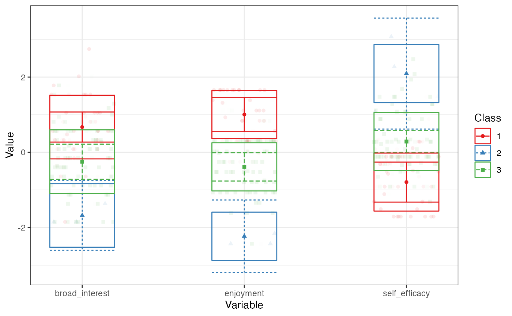

Introduction to tidyLPA
Joshua M. Rosenberg
2017-11-05
Background
tidyLPA provides an interface to the powerful MCLUST package to easily carry out Latent Profile Analysis (LPA). Its main contribution is corresponding that are commonly specified when carrying out LPA. Its secondary contribution is to make it easier to use the output in subsequent analysis through a tidy user interface, in that output is in the form of a tibble (closely related to a data.frame) that can subsequently be computed on.
The goal of tidyLPA is to provide tools to make it easier to use the R package MCLUST for Latent Profile Analysis analyses.
This is a sister-project to prcr, for two-step cluster analysis. tidyLPA has been benchmarked to MPlus, at least for a simple dataset (the iris dataset) and with three of the most common model specifications. You can find the results of that benchmarking, which showed the results to be nearly, identical, here.
Example
library(tidyLPA)A data-first, tidy approach
tidyLPA is presently designed to be used in two ways:
In a “data-first” (or tidy) way, akin to the interface popularized in the
dplyrandtidyr(and other) packages - this approach is termed a “tidy” approach in large parts of the R users communityIn a more conventional, object-oriented way - this approach will be familiar to those who have used functions such as the built-in
lm()function for general linear models (i.e., regression and ANOVA)
This example makes use of the first, data-first, tidy approach, in which a data.frame (or a tibble to those who use packages such as dplyr and other “tidy” packages) is both input and output by the main function in this package.
Using the built-in pisaUSA15 dataset (using just 200 observations for illustrative purposes) and variables for broad interest, enjoyment, and self-efficacy, we can explore a three profile solution, with, for example, 4 profiles, and varying means across profiles, but equal variances and covariances (specified with model = 2, which happens to be the default model if none is specified)
library(dplyr, warn.conflicts = FALSE)
d <- pisaUSA15
d <- sample_n(pisaUSA15, 500)
create_profiles_lpa(d, broad_interest, enjoyment, self_efficacy, n_profiles = 4, model = 2)
#> Model with 4 profiles using the 'varying means, equal variances and covariances' model.
#> AIC is 2834.176
#> BIC is 2921.383
#> ICL is 3334.484
#> Entropy is 0.65612
#> # A tibble: 470 x 5
#> broad_interest enjoyment self_efficacy profile posterior_prob
#> <dbl> <dbl> <dbl> <dbl> <dbl>
#> 1 3.0 2.6 2.000 1 0.61932
#> 2 3.2 2.4 2.375 1 0.57883
#> 3 4.0 3.6 2.625 2 0.53251
#> 4 3.6 3.8 2.000 2 0.73080
#> 5 2.0 3.0 3.500 1 0.69102
#> 6 2.0 2.0 2.250 3 0.63852
#> 7 2.2 3.0 2.000 1 0.69583
#> 8 3.2 3.2 2.375 2 0.54036
#> 9 2.8 3.0 1.000 1 0.64184
#> 10 2.6 2.6 2.625 1 0.69420
#> # ... with 460 more rowsYou can see the output is simply the same tibble that is input as the first function to create_profiles_LPA, but modified so that the classification and posterior probability of the classification are added (and incomplete cases with respect to the variables used to estimate the profiles removed).
A bit more information the models. While MCLUST has a wide variety of models available (see mclust::mclustModelNames() for a full list), the three that are most commonly specified when carrying out LPA.
- Varying means, equal variances, and residual covariances fixed to zero (specified with the argument
model = 1tocreate_profiles_lpa()) - Varying means, equal variances and covariances (
model = 2; the default) - Varying means, variances, and covariances (
model = 3)
We can then plot this output using the plot_profiles_lpa() function and the pipe (%>%) from the dplyr package:
create_profiles_lpa(d, broad_interest, enjoyment, self_efficacy, n_profiles = 4, model = 2) %>%
plot_profiles_lpa()
#> Model with 4 profiles using the 'varying means, equal variances and covariances' model.
#> AIC is 2834.176
#> BIC is 2921.383
#> ICL is 3334.484
#> Entropy is 0.65612
Below is identical to the two lines of code above, except that instead of using the pipe, we save the output the object m3, and then call the plot_profiles_lpa() function on the output that it points to.
m3 <- create_profiles_lpa(d, broad_interest, enjoyment, self_efficacy, n_profiles = 4, model = 2)
#> Model with 4 profiles using the 'varying means, equal variances and covariances' model.
#> AIC is 2834.176
#> BIC is 2921.383
#> ICL is 3334.484
#> Entropy is 0.65612
plot_profiles_lpa(m3, to_center = TRUE)
A more conventional, object-oriented approach
In addition to being used as part of a “tidy” approach, there is also an option to use it as part of a more conventional, object-oriented approach. In this example, instead of outputting a tibble, we will output an object of class Mclust.
m3_mclust <- create_profiles_lpa(d, broad_interest, enjoyment, self_efficacy, n_profiles = 4, model = 2, to_return = "mclust")
#> Model with 4 profiles using the 'varying means, equal variances and covariances' model.
#> AIC is 2834.176
#> BIC is 2921.383
#> ICL is 3334.484
#> Entropy is 0.65612Any of the functions from the MCLUST package that work with this type of output will work on this output; the only difference is that the model is specified in this package (with the create_profiles_lpa() function) instead of the Mclust() function from the MCLUST package.
In addition, a number of helper functions are available for extracting various model information.
extract_mclust_summary(m3_mclust)
#> LL BIC Entropy
#> 1 -1396.088 2921.383 0.656
extract_variance(m3_mclust)
#> # A tibble: 3 x 4
#> param_name var_name class est
#> <chr> <chr> <chr> <dbl>
#> 1 Variances broad_interest class_4 0.264
#> 2 Variances enjoyment class_4 0.358
#> 3 Variances self_efficacy class_4 0.398
extract_covariance(m3_mclust)
#> # A tibble: 9 x 3
#> param_name var_name est
#> <chr> <chr> <dbl>
#> 1 BROAD_IN_WITH BROAD_INTE 0.26396277
#> 2 ENJOYMEN_WITH BROAD_INTE 0.05383697
#> 3 SELF_EFF_WITH BROAD_INTE -0.06443916
#> 4 BROAD_IN_WITH ENJOYMENT 0.05383697
#> 5 ENJOYMEN_WITH ENJOYMENT 0.35772582
#> 6 SELF_EFF_WITH ENJOYMENT -0.11644558
#> 7 BROAD_IN_WITH SELF_EFFIC -0.06443916
#> 8 ENJOYMEN_WITH SELF_EFFIC -0.11644558
#> 9 SELF_EFF_WITH SELF_EFFIC 0.39775670Comparing many models using information criteria
We can quickly explore a number of models - both in terms of the specification of the model and the number of profiles using the Bayesian Information Criteria (BIC) values or the Integrated Completed Likelihood (ICL). For illustration, the built-in (to R) iris dataset is used a number of the models using the PISA data do not reach convergence.
compare_models_lpa(iris, Sepal.Length, Sepal.Width, Petal.Length, Petal.Width, statistic = "BIC")
compare_models_lpa(iris, Sepal.Length, Sepal.Width, Petal.Length, Petal.Width, statistic = "ICL")
Carrying out a bootstrapped likelihood-ratio test to choose the number of profiles for a specific model
To determine the number of profies for a specified model (i.e., models 1-3 described above, we can carry out a bootstrapped likelihood-ratio test. Note that the code is shown but run because it can take substantial time, even for a small dataset (this code with only 500 observations and three variables takes about 15 seconds to run on my computer with 2.2 GHZ Macbook Pro with 16 GB RAM).
bootstrap_lrt(d, broad_interest, enjoyment, self_efficacy, model = 1)How to contribute and get in touch
To contribute, file issues via GitHub here or get in touch via email or Twitter.